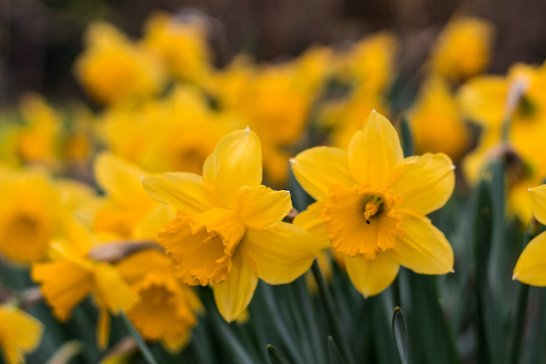
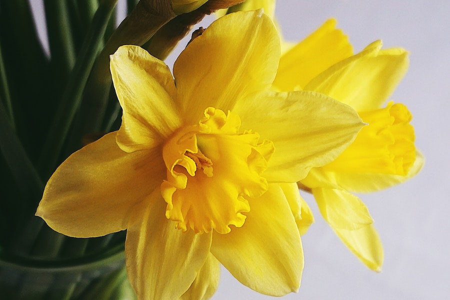

Imagens




O narciso, também conhecido como narciso-dos-poetas, é nativo da região do Mediterrâneo, mas hoje em dia é cultivado em várias partes do mundo, principalmente em climas temperados.
Os narcisos têm uma longa história e são frequentemente associados à renovação e ao renascimento, pois florescem na primavera. Eles são símbolos de esperança e novos começos em muitas culturas.
Existem inúmeras variedades de narcisos, cada uma com suas próprias cores e formas de flores. Alguns exemplos incluem Narcissus pseudonarcissus (narciso-silvestre), Narcissus poeticus (narciso-dos-poetas) e Narcissus tazetta (narciso-das-chuvas).
Os narcisos são principalmente apreciados como flores ornamentais e são populares em arranjos de flores e jardins. Eles não são consumidos devido à toxicidade de suas partes.
Os preços das flores de narciso podem variar dependendo da variedade, do tamanho do buquê e da região geográfica. Em geral, você pode encontrar narcisos em floriculturas por preços que variam de R$ 10 a R$ 30 por buquê.
Se você deseja cultivar narcisos em seu jardim, pode adquirir bulbos de narciso. Os preços dos bulbos variam dependendo da variedade, mas podem ser encontrados por cerca de R$ 2 a R$ 5 por bulbo.
Os narcisos são relativamente fáceis de cultivar, desde que recebam luz solar adequada e solo bem drenado. Eles florescem na primavera e retornam ano após ano, tornando-os uma adição popular aos jardins.
Os narcisos são frequentemente usados em arranjos de casamentos e decorações de primavera. Os preços de arranjos podem variar dependendo do tamanho e da complexidade, com opções a partir de R$ 30.